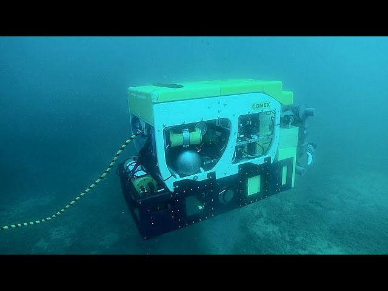

La robótica ofrece numerosos beneficios en diferentes ámbitos, algunos de los cuales son:
- Eficiencia y productividad: Los robots pueden realizar tareas repetitivas y de alta precisión con mayor velocidad y consistencia en comparación con los trabajadores humanos, lo que aumenta la productividad.
- Seguridad: Los robots pueden realizar trabajos peligrosos o en entornos hostiles, como manejo de materiales peligrosos, trabajos en altura o en espacios confinados, reduciendo los riesgos para los trabajadores humanos.
- Calidad mejorada: Los robots pueden producir productos con mayor precisión y calidad consistente, lo que reduce los errores y el desperdicio.
- Acceso a entornos hostiles:como lo son el espacio exterior, el fondo marino, espacios desprovistos de aire, etc., en los que un trabajador humano no podría operar o lo haría a altísimos costos y riesgos.
- Expansión de capacidades: Los robots pueden realizar tareas que van más allá de las capacidades físicas o cognitivas de los humanos, como manipular cargas pesadas, realizar tareas monótonas o trabajar en entornos extremos.
- Ayuda en la medicina: permitiendo operaciones a distancia, controladas mediante software médico especializado, con un altísimo índice de precisión, a través de brazos y otras herramientas robóticas.
- Innovación y avance tecnológico: El desarrollo de la robótica impulsa el avance en áreas como la inteligencia artificial, la visión artificial, la navegación autónoma y la interacción humano-robot, lo que a su vez fomenta la innovación en diversos sectores.
